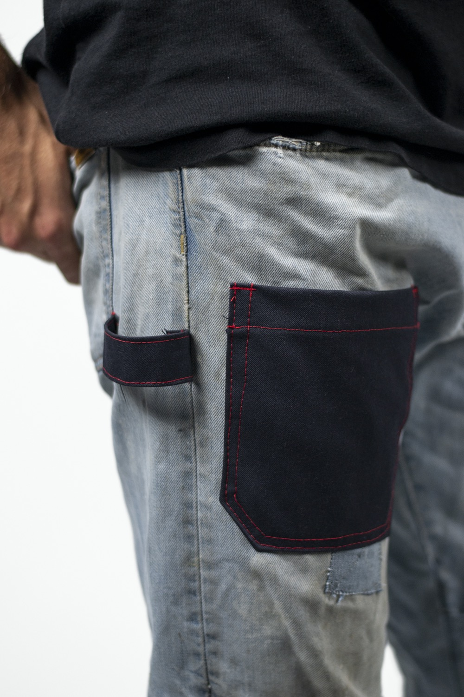
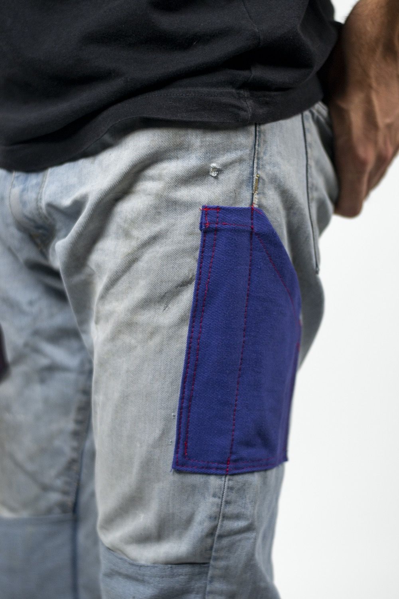
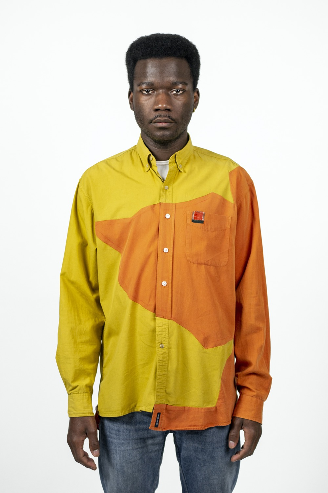
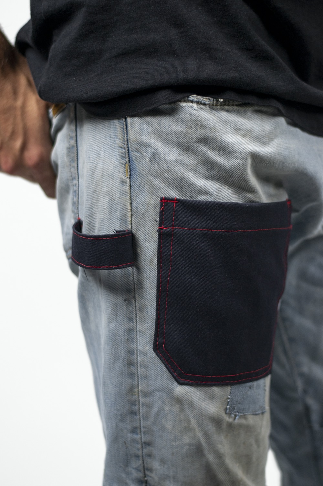
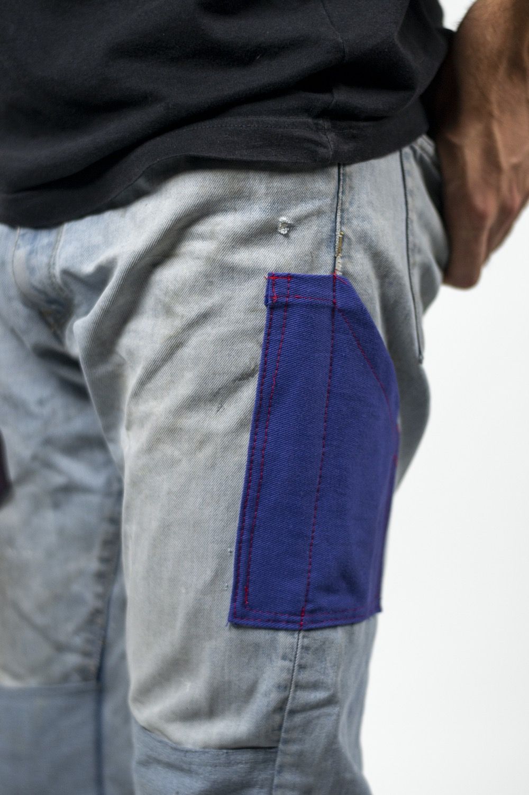
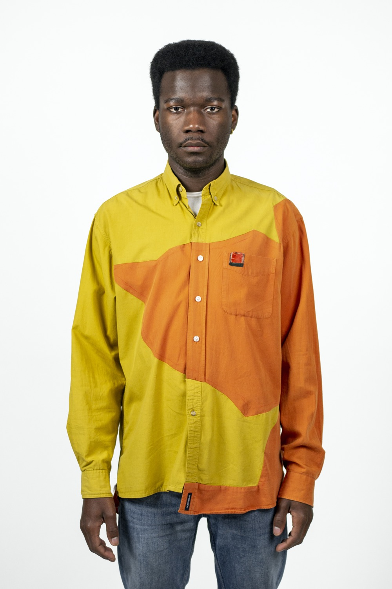

Workwear Jeans
A pair of jeans that have become worn and repaired over time. They have lost their lustre but are still very functional and are maybe the most comfortable as they changed to your fit. By adding some pockets we can turn these old pants into workwear jeans.
 
